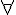
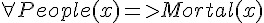
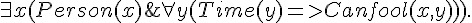

謂詞邏輯、一階邏輯與「哥德爾完備定理」
前言
在 布林邏輯與推論系統 -- 何謂嚴格的數學證明？ 這篇文章中，我們介紹了「布林邏輯」(Boolean Logic) 這種簡單的推論系統，這種邏輯系統又稱為「命題邏輯」(Propositional Logic)。
在本文中，我們將介紹一個能力較強大的邏輯系統，稱為「一階邏輯」(First Order Logic) 系統，這是一種「謂詞邏輯」(Predicate Logic) 的實例，然後再說明這種邏輯系統中的一個重要定理，稱為「哥德爾完備定理」。
謂詞邏輯
在布林邏輯中，只有用來代表真假值的簡單變數，像是 A, B, C, X, Y, Z .... 等，所以邏輯算式看來通常如下：
- P & (P=>Q) => Q.
- A & B & C => D | E.
- -(A & B) <=> -A | -B.
這種命題邏輯裏沒有函數的概念，只有簡單的命題 (Proposition)，因此才稱為命題邏輯。
而在謂詞邏輯裏，則有「布林函數」的概念，因此其表達能力較強，例如以下是一些謂詞邏輯的範例。
- Parent(x,y) <= Father(x,y).
- Parent(John, Johnson).
- Ancestor(x,y) <= Parent(x,y).
- Ancestor(x,y) <= Ancestor(x,z) & Parent(z,y).
您可以看到在這種邏輯系統裏，有「布林變數」的概念 (像是 x, y, z 等等)，也有函數的概念，像是 Parent(), Father(), Ancestor() 等等。
一階邏輯
在上述這種謂詞邏輯系統中，如果我們加上  (對於所有) 或  (存在) 這兩個變數限定符號，而其中的謂詞不可以是變項，而必須要是常項，這種邏輯就稱為一階邏輯。
(存在) 這兩個變數限定符號，而其中的謂詞不可以是變項，而必須要是常項，這種邏輯就稱為一階邏輯。
-  ; 人都是會死的。
 ; 蘇格拉底是人。
; 蘇格拉底是人。 ; 蘇格拉底會死。
; 蘇格拉底會死。
當然、規則可以更複雜，像是以下這個範例，就說明了「存在一些人可以永遠被欺騙」。
- 
二階邏輯
如果一階邏輯中的謂詞，放寬成可以是變項的話 (這些變項可以加上 與  等符號的約束)，那就變成了二階邏輯，以下是一些二階邏輯的規則範例。
等符號的約束)，那就變成了二階邏輯，以下是一些二階邏輯的規則範例。


 ; 數學歸納法。
; 數學歸納法。
一致性與完備性
在邏輯系統中，所謂的「一致性」，是指公理系統本身不會具有矛盾的現象。假如我們用 A 代表該公理系統，那麼 A 具有一致性就是 A 不可能導出兩個矛盾的結論，也就是 A => P 與 A=> -P 不可能同時成立。
哥德爾完備性定理
哥德爾於 1929 年證明了「哥德爾完備定理」(Gödel's Complete Theorem)，這個定理較簡化的陳述形式如下：
- 一階邏輯系統是一致且完備的，也就是所有的一階邏輯定理都可以透過機械性的推論程序證明出來，而且不會導出矛盾的結論。
以下是哥德爾完備定理的兩種陳述形式，詳細的證明方法請參考 Wikipedia:Original proof of Gödel's completeness theorem。
Theorem 1. Every formula valid in all structures is provable.
Theorem 2. Every formula φ is either refutable or satisfiable in some structure
結語
「哥德爾完備性定理」似乎得到了一個很正向的結果，讓人對邏輯系統的能力擁有了一定的信心。
但是、當哥德爾進一步擴展這個邏輯系統，加入了「自然數的加法與乘法」等運算之後，卻發現了一個令人沮喪的結果，那就是「包含自然數加法與乘法的一階邏輯系統，如果不是不一致的，那就肯定是不完備的，不可能兩者都成立」。
這將引出我們的下一篇文章， 從程式人的角度證明「哥德爾不完備定理」。
參考文獻
- 維基百科：謂詞邏輯
- 維基百科：一階邏輯
- 維基百科：二階邏輯
- Wikipedia:First-order logic
- Wikipedia:Second-order_logic
- 維基百科：哥德爾完備性定理
- http://www.encyclopediaofmath.org/index.php/Henkin_construction
- Wikipedia:Original proof of Gödel's completeness theorem
【本文由陳鍾誠取材並修改自 維基百科，採用創作共用的 姓名標示、相同方式分享 授權】